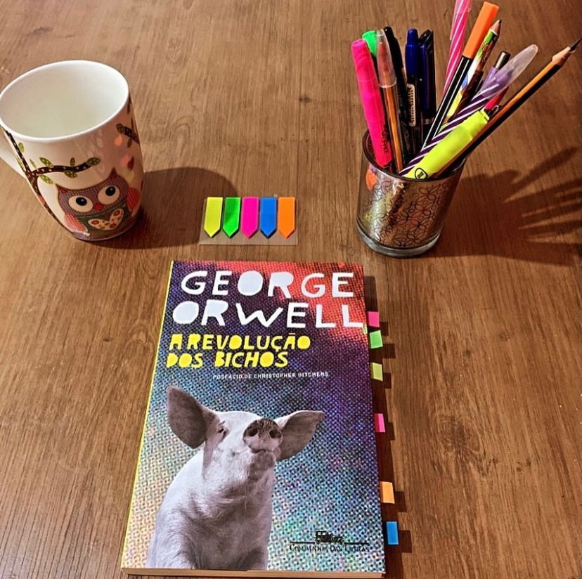

A Revolução dos Bichos
(George Orwell - 1945)
⭐⭐⭐⭐⭐
Boa Tarde, Leitores! Hoje trago mais uma “icônica” obra de George Orwell que vai nos mostrar através de uma sátira como o poder corrompe e corrompe mesmo. O objetivo de Orwell com este livro foi criticar o governo ditatorial de Stálin na União Soviética, e aqui você percebe como cada personagem se encaixa em pessoas da vida real.
A Revolução dos Bichos, de George Orwell, se passa numa granja liderada, inicialmente, pelo Sr. Jones. Porém, insatisfeitos com a dominação e exploração e liderados pelo Porco Major, os animais decidem fazer uma revolução. Assim, o inimigo seria aquele que anda sobre duas pernas. Os animais se organizam e expulsam Sr. Jones da granja, pois não queriam mais ser tratados como escravos dos humanos. Os porcos passam a liderar a granja, considerando-se os animais mais inteligentes.
A narrativa é de fácil entendimento, fluida e o livro é bem fino, dá pra ser devorado em poucas horas. A grande sacada em utilizar uma fábula para contar a história faz com que tudo se torne ainda mais fácil e mais interessante. A história é provocante e nos leva a muitas reflexões ainda nos tempos atuais, e acredito que essa característica de ser atemporal está presente em todas as obras de George Orwell.